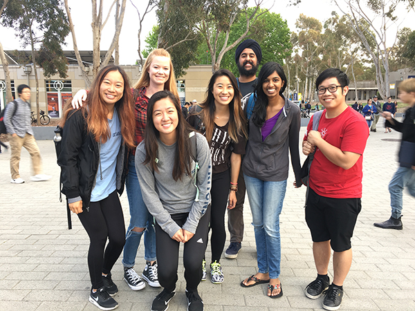

Project RISHI is a non-profit organization, whose mission is to promote
the sustainable development and growth of rural Indian communities.
To get started, click on one of the wards on the left to explore
the regions where projects are based. Project initiatives and
landmarks can be filtered on the right.
Click to learn more about the development of the map interface.
The map page was developed by a team of six students at UC San Diego in collaboration with the UC Berkeley chapter of Project RISHI.

Team Lead: Daniel Nguyen
Coding Team: Lauren Diep, Veena Kumar, Stefanie Tonnu
UX Team: Vania Lei, Sienna Thomas
Client Liaison: Sienna Thomas